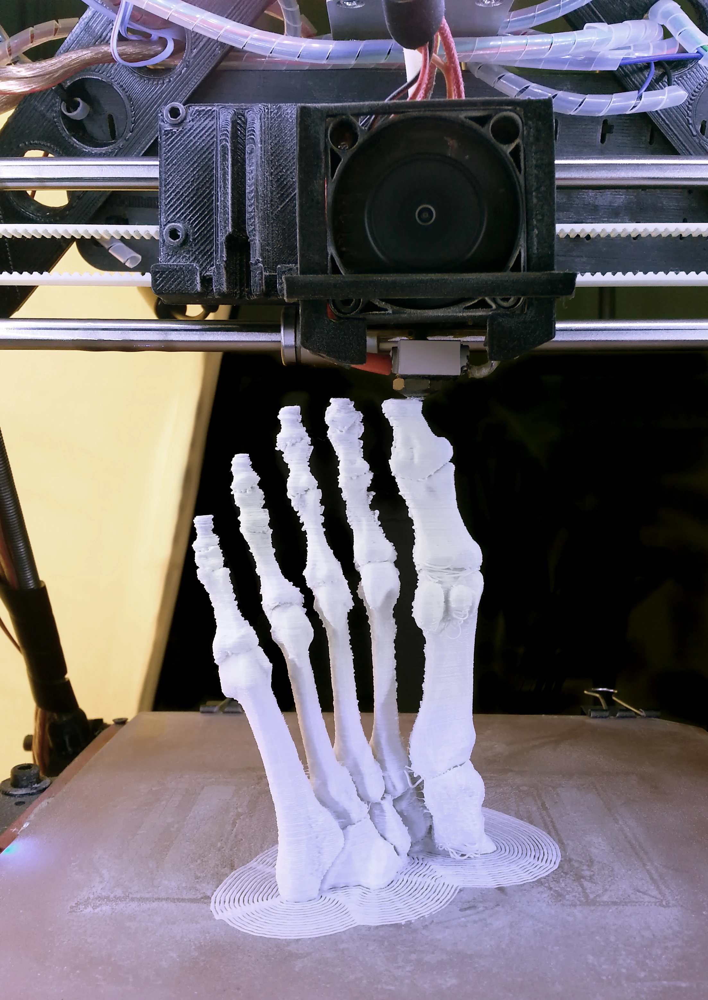
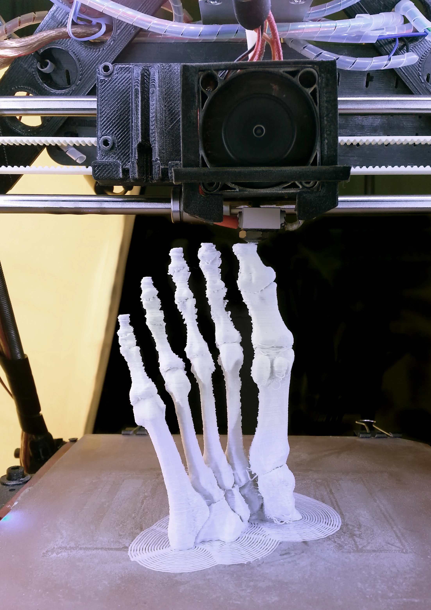

Oplev anatomi på en helt ny måde!
Sygeplejerske - 7. Semester
Tænk, hvis du kunne lære om menneskets anatomi ikke bare ved at læse en bog, men ved faktisk at kunne røre ved og udforske kroppens indre systemer. Det gjorde Camilla, en sygeplejerskestuderende, da hun brugte FabLabs teknologi til at bringe anatomi til livs med 3D-modeller. I stedet for at kæmpe med abstrakte billeder og tørre teorier, lavede Camilla modeller, som både studerende og patienter kunne bruge til at få en meget bedre forståelse af kroppens kompleksitet.
Med FabLabs superseje 3D-printere og digitale værktøjer begyndte Camilla at skabe modeller af organer, muskler og knogler, der kunne printes i plast og andre materialer. Hun lavede de mest detaljerede figurer, som kunne samles, manipuleres og tages i hånden – og det gjorde anatomi langt lettere at forstå, end de to-dimensionelle billeder i bøgerne nogensinde kunne. Det var hands-on læring på højeste niveau!
Men Camilla gik endnu længere. Hun brugte FabLabs teknologi til at skabe interaktive læringsstationer, hvor studerende kunne arbejde med både de fysiske modeller og digitale 3D-visualiseringer på skærme. Her kunne man rotere modellerne, zoome ind på detaljer og få en endnu bedre forståelse af, hvordan kroppens systemer hænger sammen – på en helt ny og sjov måde.
Og det stopper ikke her. Camilla brugte også de samme modeller til at hjælpe patienter med at forstå deres sygdomme og behandlinger. Mange patienter har svært ved at forstå komplekse medicinske termer, men med de fysiske modeller kunne Camilla give dem noget, de kunne røre ved og visualisere. Det gjorde kommunikationen meget nemmere og mere personlig.
Det, der gør Camillas projekt så fantastisk, er ikke bare teknologien, men hvordan det engagerer både studerende og patienter på en helt ny måde. Hun formåede at gøre anatomi både sjovt og overskueligt ved at kombinere teknologi og pædagogik. Studerende lærte ikke kun om kroppens opbygning, men også hvordan de kan bruge teknologi til at forbedre deres egen praksis som sygeplejersker. For patienterne betød det, at de fik en lettere og mere forståelig måde at engagere sig i deres eget helbred.
Camillas projekt er et perfekt eksempel på, hvordan teknologi og sundhedsfaglig viden kan arbejde sammen og skabe en sjovere og mere tilgængelig læringsoplevelse. Ved at bruge FabLabs ressourcer til at lave hands-on, interaktive læringsværktøjer, har hun gjort anatomi til noget, vi alle kan forstå og have det sjovt med. Det åbner op for en helt ny måde at tænke undervisning og patientkommunikation på – og det er bare begyndelsen!
 
